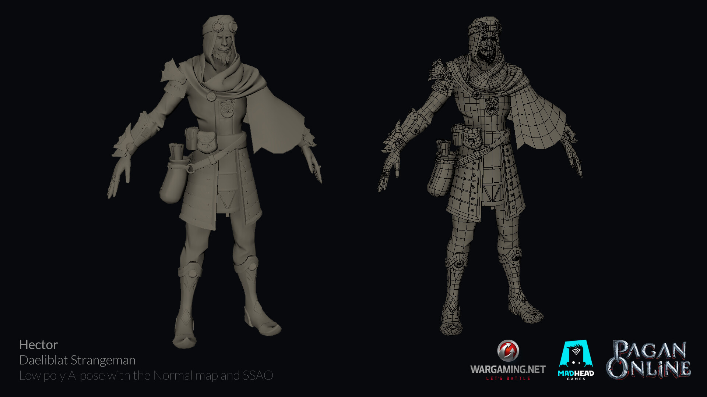
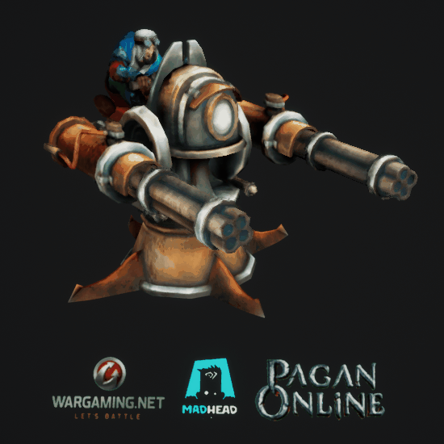
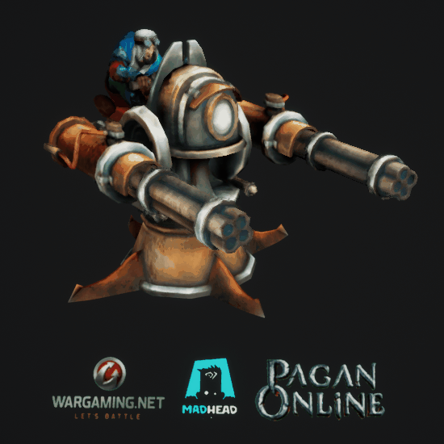

Vendir: Plague of Lies - Weapons
These are all the weapons I worked on for Vendir: Plague of Lies, my responsibility was their low poly topology and UV's, which most of are tightly packed on 1k atlases as shown below. Their poly count ranges from 100 to 3000.


Vendir: Plague of Lies - Faceless armor sets
This is an example of armors I worked on on Vendir, all of the pieces are modular and interchangable for male and female characters, I made their low poly meshes, UV's and skinning, as I did for all other armor sets in the game, but I chose to showcase these as I personally find them to be the coolest looking.

Pagan: Absent Gods - Hector, Daeliblat Strangeman Skin
This is the skin for Hector I worked on at Mad Head Games for Pagan Online(now renamed to Pagan: Absent Gods). The concept, base model, rats, weapon, textures, rig and animations were done by my colleagues, my assignment was high-poly, low-poly, UV and baking for the armor and clothing, as well as the Scrap-O-Tron(the turret ability shown in the animation).
 
